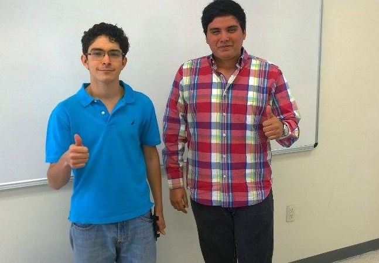

| Who are we? |
|---|
|  |
|
Who we are?
Developed by Daniel Jiménez & Alfonso Ruiz Velasco Who we are...We are InformaTec and we decided that we are needed because of the lack of serious information about who are the professors of the Tecnológico de Monterrey Campus Guadalajara, we want to give solutions to that and that’s why we are here. We are a team because we know each other since the last semester, and we think that we have different abilities that can be useful to achieve our project. |
The problem is that there isn’t a completely serious app where you can view how the professors of the Tecnológico de Monterrey Campus Guadalajara are rated, how they work, or if they are fair at grading between other things.

The prime idea is to open a “cross the better option” about many capabilities of a teacher. As an example, a teacher may be the smartest person in his area, but maybe he is not that good at explaining all what he knows. This will help both, students from next generations and the professors, to choose with whom the want to study with, and how to make a better job, this last thing for both the teachers and the students. This looks kind of like some other evaluation systems, but the idea here is to make it more formal, we may add the option of creating new evaluation strands, or a free to comment section. Both from teachers and students, with language monitoring of course. Also, we know many people distrust being name tagged, so we will add the fancy option of being anonymous, and here comes the best, no fake reviews, you can only post or evaluate a teacher that has given class to you.